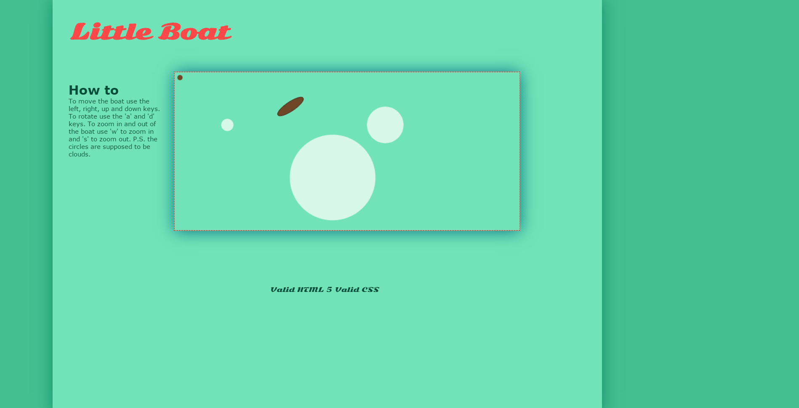

The Library I used was Paperjs and it is very similar to Processing in that it lets you draw on a canvas and have interaction or no interaction with it. It is particularly good for SVGs and for smooth animations within you sketch. The animation are automatically at 60 frames per second, so they end up pretty smooth. The thing particular to the library is that you can add, multiply and subtract vectors and not just numbers (Vector1 * Vector2, rather than 5 *8). It also has a DOM-like structure where you can affect more than one object if you target the parent.
The program lets you code in Javascript or Paperscript, which is their own personal language. All of the examples were in Paperscript, so they said to keep that in mind. Half the struggle was actually getting the library to load. The way they say to do it on the website did not work for me. I had to go and get an external cdn (I used paperjs full) and put the link there rather than having it within the file itself. It does have a warning on my console log, but it works so far. If you can figure out their way of linking to the library, let me know, because I spent a long time doing it. I might use another library though, because it was such a hassle ad it still is a bit iffy.
I had to look up a YouTube video to help me understand what was going on, so I really recommend you watch the link. It basically explains what it is and basic feature of it, and it might be better to actually see it rather than just reading. The website also has a bunch of tutorials and examples which you can edit and run on the spot and to see how they interact. If you download the 9.25 version of the library there are also a couple of more examples as well as SVG files that you can use.
I am making a game where you have an aerial view of the character/play area so I wanted to see how you can move it around the canvas. I used the WASD and arrow keys to move around the space. It is a very simple sketch and is nowhere near the nice example that are on the Paperjs website, but it is relevant to what I am doing. It depends on what you want from the library (background images, characters, interactive backgrounds, etc.). I may or may not use this on my project, I was torn between this and the Createjs library.